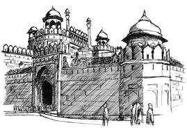
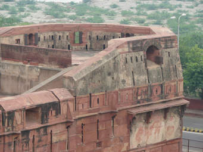
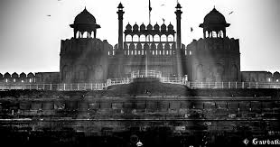
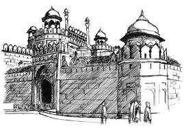
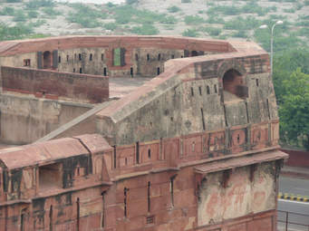
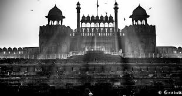

(:JASH PRODUCTIONS :)
RED FORT
Welcome To The World Of the Red fort
 

Location Delhi, India Coordinates 28.656°N 77.241°ECoordinates: 28.656°N 77.241°E Built 1648 Architect Ustad Ahmad Lahauri Architectural style(s) Indian architecture
ABOUT IT...
The Red Fort was the residence of the Mughal emperor of India for nearly 200 years, until 1857. It is located in the centre of Delhi and houses a number of museums. In addition to accommodating the emperors and their households, it was the ceremonial and political centre of Mughal government and the setting for events critically impacting the region.
Constructed in 1648 by the fifth Mughal Emperor Shah Jahan as the palace of his fortified capital Shahjahanabad, the Red Fort is named for its massive enclosing walls of red sandstone a nd is adjacent to the older Salimgarh Fort, built by Islam Shah Suri in 1546. The imperial apartments consist of a row of pavilions, connected by a water channel known as the Stream of Paradise (Nahr-i-Behisht). The fort complex is considered to represent the zenith of Mughal creativity under Shah Jahan and although the palace was planned according to Islamic prototypes, each pavilion contains architectural elements typical of Mughal buildings that reflect a fusion of Timurid and Persian traditions. The Red Fort’s innovative architectural style, including its garden design, influenced later buildings and gardens in Delhi, Rajasthan, Punjab, Kashmir, Braj, Rohilkhand and elsewhere. With the Salimgarh Fort, it was designated a UNESCO World Heritage Site in 2007 as part of the Red Fort Complex.On Independence Day (15 August), the Prime Minister of India hoists the 'tricolor' national flag at the main gate of the fort and delivers a nationally-broadcast speech from its ramparts.
History of it
Emperor Shah Jahan commissioned construction of the Red Fort in 1638, when he decided to shift his capital from Agra to Delhi. Originally red and white, the Shah's favourite colours, its design is credited to architect Ustad Ahmad Lahauri, who also constru cted the Taj Mahal. The fort lies along the Yamuna River, which fed the moats surrounding most of the walls. Construction beg an in the sacred month of Muharram, on 13 May 1638. Supervised by Shah Jahan, it was completed in 1648.Unlike other Mughal forts, the Red Fort's boundary walls are asymmetrical to contain the older Salimgarh Fort. The fortress-palace was a focal point of the medieval city of Shahjahanabad, which is present-day Old Delhi. Its planning and aesthetics represent the zenith of Mughal creativity prevailing during Shah Jahan's reign. His successor Aurangzeb added the Pearl Mosque to the emperor's private quarters, constructing barbicans in front of the two main gates to make the entrance to the palace more circuitous. The administrative and fiscal structure of the Mughal dynasty declined after Aurangzeb, and the 18th century saw a degeneration of the palace. When Jahandar Shah took over the Red Fort in 1712, it had been without an emperor for 30 years. Within a year of beginning his rule, Shah was murdered and replaced by Farrukhsiyar. To raise money, the silver ceiling of the Rang Mahal was replaced by copper during this period. Muhammad Shah, known as 'Rangila' (the Colourful) for his interest in art, took over the Red Fort in 1719. In 1739, Persian emperor Nadir Shah easily defeated the Mughal army, plundering the Red Fort including the Peacock Throne. Nadir Shah returned to Persia after three months, leaving a destroyed city and a weakened Mughal empire to Muhammad Shah. The internal weakness of the Mughal empire made the Mughals titular heads of Delhi, and a 1752 treaty made the Marathas protectors of the throne at Delhi. The 1758 Maratha conquest of Lahore and Peshawar placed them in conflict with Ahmad Shah Durrani. In 1760, the Marathas removed and melted the silver ceiling of the Diwan-i-Khas to raise funds for the defence of Delhi from the armies of Ahmed Shah Durrani. In 1761, after the Marathas lost the third battle of Panipat, Delhi was raided by Ahmed Shah Durrani. Ten years later, Shah Alam ascended the throne in Delhi with Maratha support. In 1783 the Sikh Misl Karorisinghia, led by Baghel Singh Dhaliwal, conquered Delhi and the Red Fort. The Sikhs agreed to restore Shah Alam as emperor and retreat from the fort if the Mughals would build and protect seven Gurudwaras in Delhi for the Sikh gurus. During the Second Anglo-Maratha War in 1803, forces of British East India Company defeated Maratha forces in the Battle of Delhi; this ended Maratha rule of the city and their control of the Red Fort. After the battle, the British took over the administration of Mughal territories and installed a Resident at the Red Fort. The last Mughal emperor to occupy the fort, Bahadur Shah II, became a symbol of the 1857 rebellion against the British in which the residents of Shahjahanbad participated.
write any comments or feedbacks....on this site...
bla bla bla.com